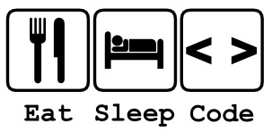
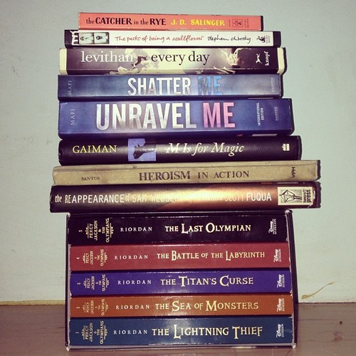

The name is Edryan Joshua Lacsina Saltat. I am a tireless seeker of knowledge,
occassional purveyor of wisdom and also, coincidentally, an IT student.
I grew up in a secluded place called Itogon and was born in Baguio City.
I'm 18 years old turning 19 this December 5.
I was often called over-sensitive when I was young,
but I've learned to appreciate this quality in myself.
One thing about me is that
I enjoy being alone in the sense of walking to places,
or listening to music, or walking my dog. It gives me space to think and helps me as a person to continue,
if I did not have my own personal solitude I would find life hard.

So basically this is the daily routine of an IT student. Eat. Sleep. Code.
Sometimes I hate programming but I learned to enjoy programming itself.
I'm not doing it that badly, sometimes I even do it better than some people JOKE :).
But it's too frustrating. Stupidly complex stuff that people consider "learnable" even if
it's extremely complicated, fighting against the computer, dumb errors, configurations,
looking yourself in front of the mirror, staring over a piece of code you can't figure how
it is supposed to work, questioning yourself what was I thinking?

Anyway, I love books. My favorite author is Stephen King and Rick Riordan
When I look at books I dont see them as paper with words that I have to read.
I see them as doors to different worlds and different stories than my own. Every one of them leads to a different country or place
where anything is possible. They are a way of escaping the normality of my life and entering a whole new world.
I consider myself a hedonist. Pleasure is the only intrinsic good. Imagine living the life that YOU really want. Imagine forgetting all the stress, the problems, everything is in your hand. Money, joy, attention and love. No more hard time spending your days pursuing your happiness. Sounds great but so difficult to achieve.
You have the gift of life. Why suffer? My philosophy in life is to seek and maximize indulgence of oneself.
Because happiness is so hard to find. Once you find it, you better hang on tight. Or you lose it.